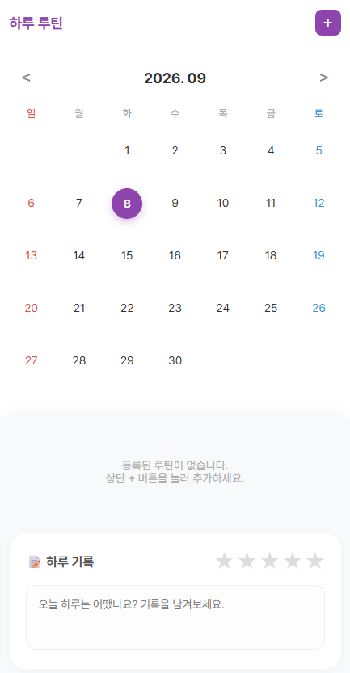
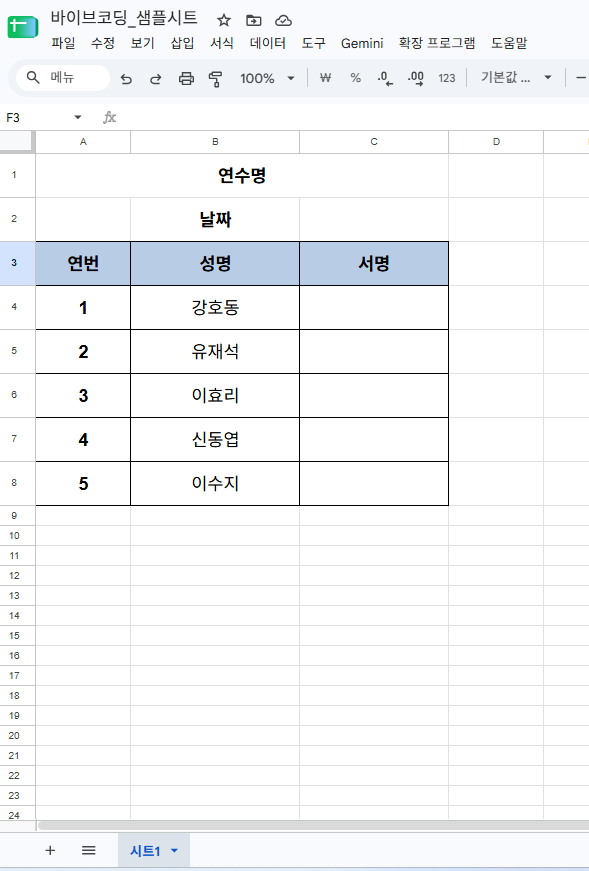

1
간단 버전 테스트
🚀 완성 샘플 확인하기 먼저 열어보기
바이브 코딩으로 실제 완성한 하루 루틴 앱입니다. 달력에서 날짜를 고르고 하루를 기록하는 간단한 앱이에요.

🤖 클로드에게 원하는 화면 보여주기
만들고 싶은 화면이나 참고할 사이트를 캡처해서 클로드에 붙여넣으세요. "이 화면처럼 구글 앱스 스크립트(GAS)로 만들어줘"라고 요청하면 바로 코드를 받을 수 있어요.
📦
code.gs · index.html 저장하고 배포하기 대소문자 주의- Apps Script 프로젝트를 새로 만들고, 클로드가 준 코드를
code.gs와index.html두 파일에 각각 붙여넣으세요. 파일 이름의 대소문자를 정확히 맞춰야 합니다. - 처음 배포할 때는
새 배포를 눌러 새로운 웹앱 주소를 발급받으세요. - 코드를 수정한 뒤에는
배포관리에서 버전만 올려야 기존 주소가 그대로 유지돼요.새 배포를 다시 누르면 주소가 새로 생성되니 주의하세요.
2
시트 연동 테스트
📄 시트 서식 복사하기
아래 샘플 시트를 내 계정으로 복사해서 사용하세요. 연번, 성명, 서명 열이 이미 만들어져 있어요.

시트를 열었으면 파일 › 사본 만들기로 내 계정에 복사한 뒤 사용하세요.
📋 프롬프트 작성하기 셀 이름이 중요해요
GAS 코드가 시트의 어느 칸을 읽고 쓸지 정확히 알려줘야 해요. 시트 이름, 헤더 위치, 열 이름을 프롬프트에 구체적으로 적어주세요. 아래 프롬프트를 내 시트에 맞게 고쳐서 사용하면 됩니다.
[시트 정보] - 시트 이름: 시트1 - 3행: 헤더 (A=연번, B=성명, C=서명) - 4행부터 이름 데이터가 있음 [기능] 1. 메인 페이지에 서명자 이름 목록이 나오고, 이름을 누르면 서명할 수 있어야 해. 2. 서명하면 해당 이름의 C열(서명)에 서명 내용이 자동으로 기록돼야 해. 3. 메인 페이지 우측 상단에 삼줄(≡) 메뉴 버튼을 만들어줘. 누르면 [서명지 만들기], [서명지 출력하기] 두 메뉴가 나와야 해. 4. [서명지 만들기]: 연수명과 날짜를 입력하면, 기존 시트1을 복사해서 새 시트(예: 연수명_날짜)를 만들고, 그 시트를 메인 페이지에서 바로 볼 수 있어야 해. 5. [서명지 출력하기]: 지금까지 만든 연수명 목록을 보여주고, 하나를 선택하면 해당 연수의 서명 시트를 불러와서 출력할 수 있어야 해. code.gs와 index.html 두 파일로 나눠서 작성해줘.
🚀 배포하기
Part 1의 3단계와 같은 방법이에요. code.gs와 index.html에 코드를 붙여넣고, 처음에는 새 배포로 주소를 발급받은 뒤 수정할 때마다 배포관리에서 버전만 올리세요. 배포 후에는 실제로 서명을 하나 남겨서 시트에 잘 기록되는지 꼭 확인하세요.
3
웹앱 주소 짧게 바꾸기
🔗 joo.is에서 계정 만들기
joo.is에 접속해서 회원가입 후 로그인하세요.
✂️ 원본 주소를 짧은 링크로 바꾸기 무료 50개
단축 링크 만들기 메뉴에서 배포된 웹앱의 원본 주소(긴 주소)를 붙여넣고, 원하는 이름을 정하면 joo.is/원하는이름 형태의 짧은 주소가 만들어져요. 이 주소를 학생이나 동료 선생님에게 공유하세요.
💡
무료 계정은 링크를 최대 50개까지 만들 수 있어요. 자주 쓰는 링크 위주로 아껴서 사용하세요.